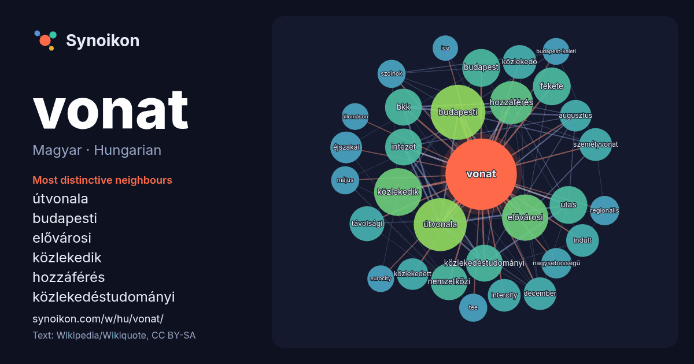

Magyar · Hungarian · word of the day list
vonat
“train” · The words found around it in 547 instances from Hungarian Wikipedia, Wikiquote.

Most distinctive neighbours
- útvonala 38×
- budapesti 31×
- elővárosi 30×
- közlekedik 30×
- hozzáférés 26×
- közlekedéstudományi 20×
- bkk 20×
- utas 19×
- távolsági 17×
- közlekedő 16×
- intercity 16×
- intézet 16×
- személyvonat 16×
- közlekedett 14×
- budapest 14×
- nagysebességű 14×
- éjszakai 13×
- fekete 13×
- tee 12×
- szolnok 12×
× = how many times more often than in general Hungarian Wikipedia text.
Most frequent neighbours
- budapesti 42
- útvonala 39
- közlekedik 32
- elővárosi 30
- hozzáférés 26
- budapest 20
- fekete 20
- utas 20
- bkk 19
- intézet 19
- közlekedéstudományi 19
- nemzetközi 19
- távolsági 17
- közlekedő 16
- december 15
- indult 15
- intercity 15
- személyvonat 15
- augusztus 14
- éjszakai 14
In context
- az egyedülálló motorkocsi is mint személyszállító vonat (például az Árpád sínautóbusz). A vonatot húzhatja ló, vontathatja drótkötél, de hajthatja a Wikipedia snippets · Vonat
- udvari vonat III. Napóleon császár számára épült 1858-ban. Az udvari vonatok fénykora az 1880-as években kezdődött Európában. A legtöbb udvari vonattal az Wikipedia snippets · Udvari vonat
- fekete vonat, a szocializmus idején Szabolcs-Szatmár megyéből Budapestre ingázókat szállító vonatok neve a közbeszédben Filmművészet Fekete vonat, 1970-ben Wikipedia snippets · Fekete vonat (egyértelműsítő lap)
- A L'Oiseau Bleu egy nemzetközi távolsági vonat volt, amely a belgiumi Antwerpent kötötte össze Franciaország fővárosával, Párizzsal. Helyét részben a Wikipedia snippets · L’Oiseau Bleu (vonat)
- Irodalom A vonat, eredeti címe Le train, Georges Simenon regénye (1961) Filmek A vonat, eredeti címe The Train, 1964-es amerikai háborús film, rendezte Wikipedia snippets · A vonat (egyértelműsítő lap)
- 1-jétől április 29-ig napi 1 vonat Délegyháza felé a (Z25-ös) számot kapta. 2022 júniusától Dunaújvárosba is jár zónázó vonat (Z42), amely Pusztaszabolcsig Wikipedia snippets · Zónázó vonat
- bővült, és a reggeli vonat Saint-Pierre-des-Corps-ban is megállt. 1982 nyarán a Saint-Pierre-des-Corps megállást felvették az esti vonat menetrendjébe is Wikipedia snippets · Aquitaine (vonat)
- svájci Bázel SBB között. 1957-ben a vonat az egyik első, kizárólag első osztályú Trans Europ Express (TEE) vonat lett, amelynek déli végállomását Bázelből Wikipedia snippets · Edelweiss (vonat)
More Hungarian words
Precomputed on 2026-10-09 with default settings (±5 words, medium corpus). The interactive map can refresh it with live data.